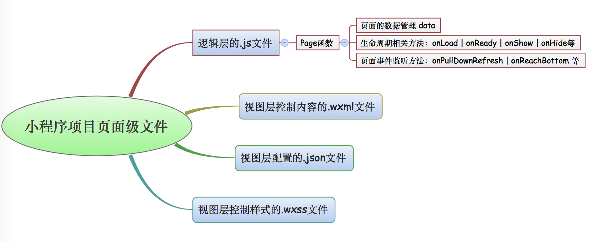
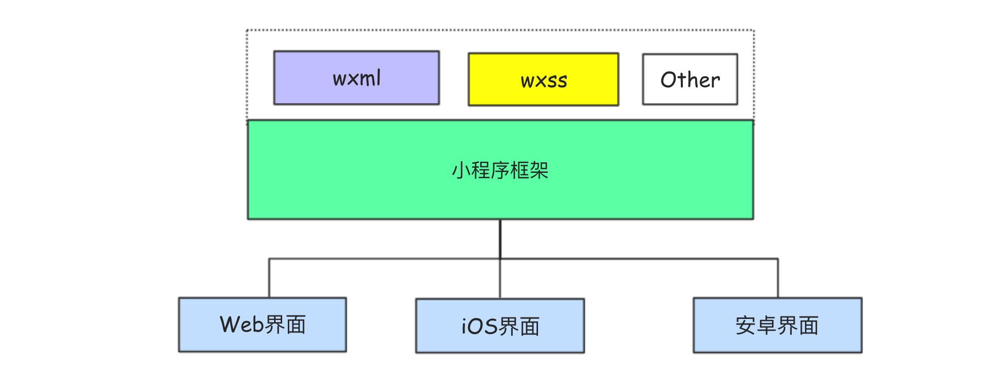

微信小程序基础[04]-小程序框架页面级文件
本文介绍小程序项目中的页面级文件，这些文件的作用，以及具体的配置字段和使用方式。
小程序中的页面级文件主要有四种类型，即每个页面都应该由4个文件组成。
小程序中同一框架页面的这四个文件必须具有相同的路径和文件名，当小程序启动进入或页面跳转的时候，小程序内部会自动根据app.json配置路径来找到对应的资源进行加载和渲染。单个页面的四个文件分别是：
❏ 控制页面逻辑的.js文件，必要的
❏ 控制页面结构的.wxml文件，必要的。
❏ 控制页面样式的.wxss文件，非必要的。
❏ 控制页面配置的.json文件，非必要的(如果创建那么使用{}表示空)。
1.0 配置文件(.json)
每个页面均可以拥有一个页面配置文件，该文件是json格式的，在进行配置的时候一定要严格遵守json数据的规范。
如果我们在小程序项目中新建-page,那么会自动创建默认的json文件({})，但该文件并非是必须的。
页面级别JSON文件配置项等同于app.json文件中的window配置项，它只能控制当前页面的窗口表现。
在渲染页面的时候，页面级文件中的window配置项会覆盖app.json中相同的配置项。
这里列出页面配置文件中的部分配置项：
1 | { |
2.0 样式文件(.wxss)
小程序中的样式文件后缀名称是.wxss。
WXSS(WeiXin Style sheets)是基于CSS扩展的样式语言，用于描述WXML的组件样式。WXSS决定WXML的组件应该怎么显示，它具有CSS的大部分特性，并在CSS的基础上扩展了尺寸单位和样式导入等特性。
尺寸单位
因为CSS中原有的尺寸单位在不同尺寸的屏幕中不能完美的实现元素的按比例缩放，所有WXSS在CSS尺寸单位的基础上拓展了两种尺寸单位。rem和rpx这两种单位本身都是相对单位，在渲染的时候最终会被换算为px。
❏ rem ，全称为root em
❏ rpx ，全称为reponsive pixel
WXSS规定所有屏幕的宽度均为20rem。
iphone6 屏幕实际宽度为375px，则20rem = 375px，那么在iphone6中，1rem = 18.75px
iPhoneXS Max屏幕实际宽度为414px,则20rem = 414px，那么在iPhoneXS Max中，1rem = 20.7px
WXSS规定所有屏幕的宽度均为750rpx。
iphone6 屏幕实际宽度为375px，则750rpx = 375px，那么在iphone6中，1rpx = 0.5px
iPhoneXS Max屏幕实际宽度为414px,则750rpx = 414px，那么在iPhoneXS Max中，1rpx = 0.552px
选择器
CSS选择器用于选择需要应用样式的元素。
WXSS仅实现了CSS中的部分选择器，使用规则和CSS选择器基本一致，目前支持的选择器有：
| 选择器 | 样例 | 样例描述 |
|---|---|---|
| .class | .intro |
选择所有拥有 class=”intro” 的组件（类选择器） |
| #id | #firstname |
选择拥有 id=”firstname” 的组件（id 选择器） |
| element | view |
选择所有 view 组件（标签选择器） |
| element, element | view, checkbox |
选择所有的 view 组件和所有的 checkbox 组件（并列） |
| ::after | view::after |
在 view 组件后边插入内容( 伪元素选着器 ) |
| ::before | view::before |
在 view 组件前边插入内容( 伪元素选着器 ) |
3.0 结构文件(.wxml)
WXML（WeiXin Markup Language）是小程序专用的一套标记语言，同html类似用于展示并渲染界面。
WXML的渲染原理和React Native基本一致，它用一套标记语言在不同平台被解析为不同端的渲染文件。
WXML标记语言最终总是会转换为宿主端对应的语言，所以在小程序开发中WXML里使用的标签(组件)只能是小程序定义的而不能使用自定义标签，如此才能够保证页面在转译的时候能够被正确处理。
4.0 逻辑文件(.js)
这是一个JavaScript文件，里面写JavaScript代码。
页面的逻辑文件主要负责：设置初始化数据、注册当前页面生命周期函数，注册事件处理函数等。
小程序的逻辑层文件都是JavaScript文件，整个项目中所有的这些JavaScript文件包括app.js最终都将被打包成一个js文件，该文件在小程序启动的时候运行，直到小程序销毁。小程序中每个页面的逻辑文件都拥有独立的作用域，这些JavaScript文件运行在独立的JavaScript引擎中。
这里列出页面中默认生成的JavaScript代码:
Page({
//页面的初始数据
data: {},
//生命周期函数--监听页面加载
onLoad: function (options) { },
//生命周期函数--监听页面初次渲染完成
onReady: function () { },
//生命周期函数--监听页面显示
onShow: function () {},
//生命周期函数--监听页面隐藏
onHide: function () { },
//生命周期函数--监听页面卸载
onUnload: function () {},
//页面相关事件处理函数--监听用户下拉动作
onPullDownRefresh: function () { },
//页面上拉触底事件的处理函数
onReachBottom: function () { },
//用户点击右上角分享
onShareAppMessage: function () { }
})
在页面的js文件中，通过Page函数来注册页面，该函数接收一个Object类型的参数，该对象中的内容主要分成页面的初始数据(data属性)、生命周期函数和事件处理函数等。
在页面的js文件中，可以通过var app = getApp()的方式来获取全局的小程序实例对象(在app.js文件中通过App函数注册的对象)。小程序框架以页面栈的形式维护了当前的所有页面，可以通过getCountPages函数来获取当前页面栈的实例，该实例以数组形式按照栈的顺序给出，第一个元素为首页最后一个元素为当前页(可以通过索引来获取)。